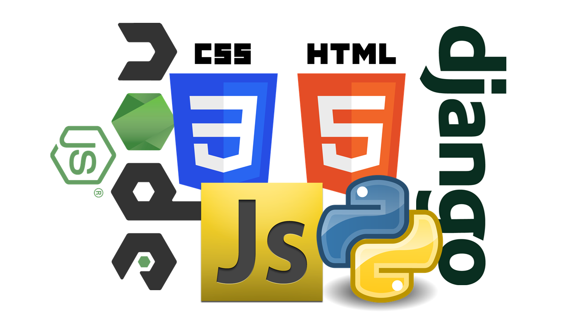

나름 블로그 소개
프로그래밍을 공부하는 쪼렙 개발자입니다.공부할 것도 많고, 공부해도 계속 까먹는 문제를 발견
그래서 공부할겸, 기록할겸 블로그를 만들기로 결정!
일주일에 1~2개의 포스팅을 하는 것을 목표로 잡고 시작
포스팅 내용은 메뉴 주로 웹 위주가 될 것입니다.
공부는 물론 실전에서 막혀서 답답한 부분을 공유
새로 발견한 효율적인 부분 역시 공유할 예정입니다!
올해 목표는 개발(특히 Web개발)에 익숙해지고 능숙해지는 것
오늘은 2018년 1월 6일